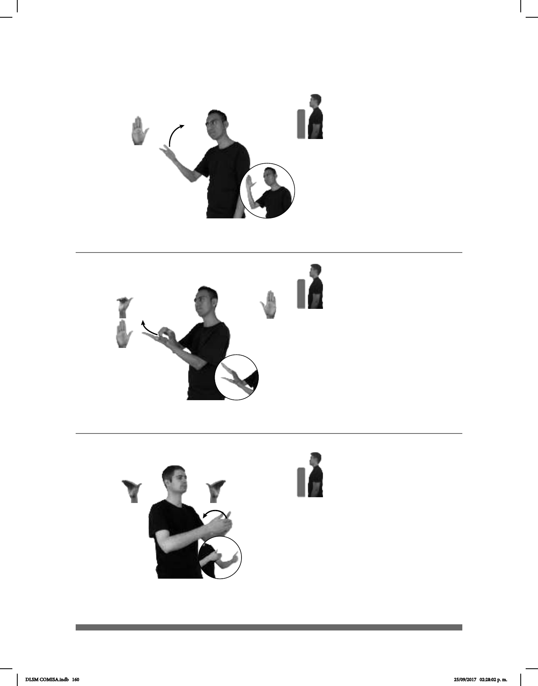

160
(B-P 149)
1
2
QUIZÁ pro-YO LLEGAR TARDE TRABAJO pro-ELLOS PODER DESPEDIR
Si llego tarde al trabajo, me pueden despedir.
Seña: SB
MD seña que pasa de
B-P.9 a B-P.2, MB B-P.2
MD palma hacia abajo.
MB palma hacia arriba.
A la altura del pecho. MD
sobre MB.
MD el pulgar permanece
inmóvil mientras los otros cuatro dedos
se aproximan a la palma y se extienden
repetidamente.
1. v. tr. Quitar a alguien el
empleo. 2. v. tr. Sacar a alguien de un
lugar o despedirlo de algún trabajo. 3.
v. tr. Sacar o correr a alguien de alguna
parte prohibiéndole su regreso.
(B-P 150)
CASA pos-AMIGO DETRÁS pos-MI CASA
La casa de mi amigo está detrás de la mía.
Seña: SB
MD y MB B-P.7
MD y MB palmas
hacia adentro.
MD y MB a la altura
del pecho.
La MD se
mueve formando un arco
hacia atrás por encima de
MB.
adv. En la parte de atrás
o posterior de algo, a espaldas de
alguien.
(B-P 148)
1
2
DUEÑO
derecha
FÁBRICA YA DESPEDIR++
El dueño de la fábrica hizo varios despidos.
Seña: SM
B-P.2
La palma inicia hacia
arriba y termina hacia la izquierda.
Del hombro al rostro.
La mano se
mueve formando un arco, mientras
el antebrazo gira y cambia su
orientación.
1. v. tr. Quitar a
alguien el empleo 2. v. tr. Sacar a
alguien de un lugar o despedirlo de
algún trabajo.
DLSM COMISA.indb 160 25/09/2017 02:28:02 p. m.